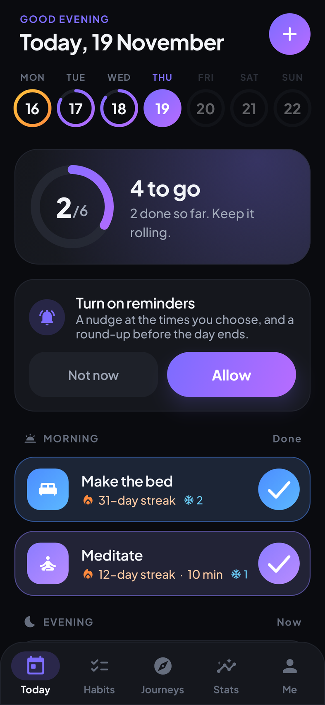
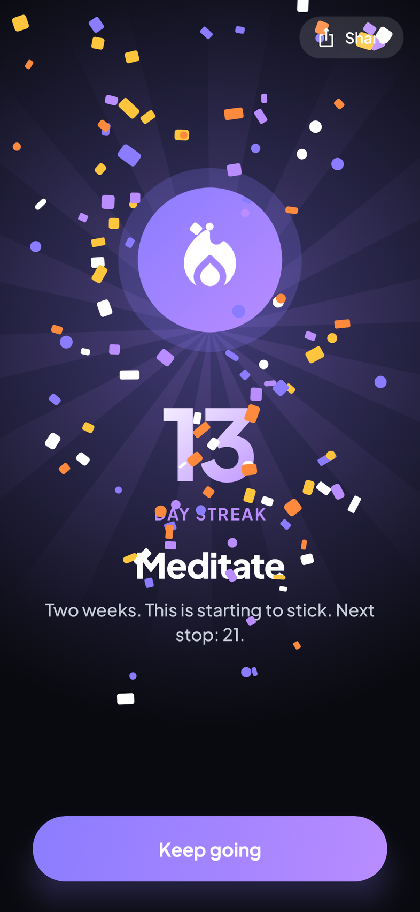
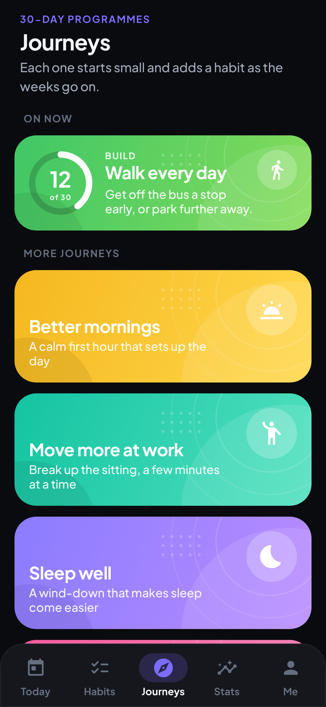
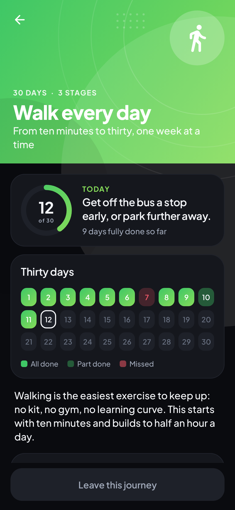
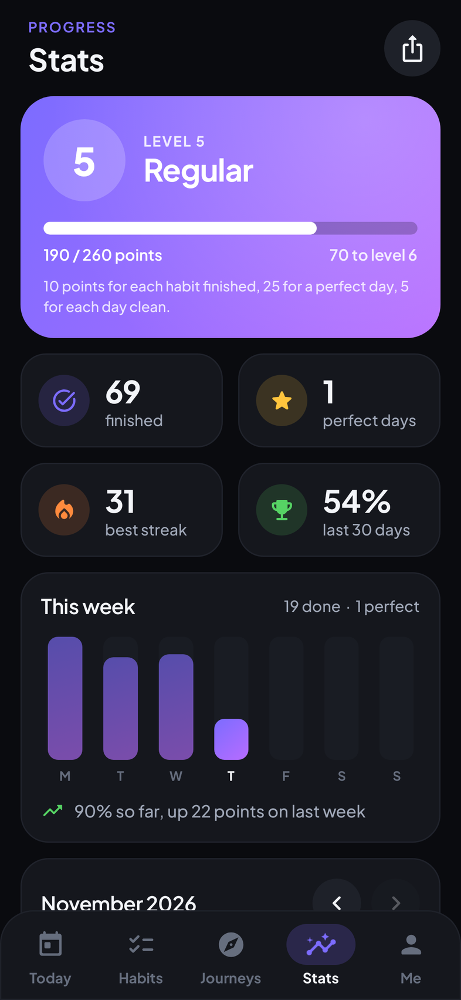
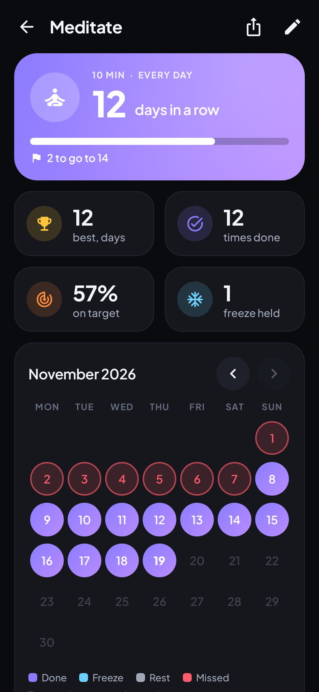
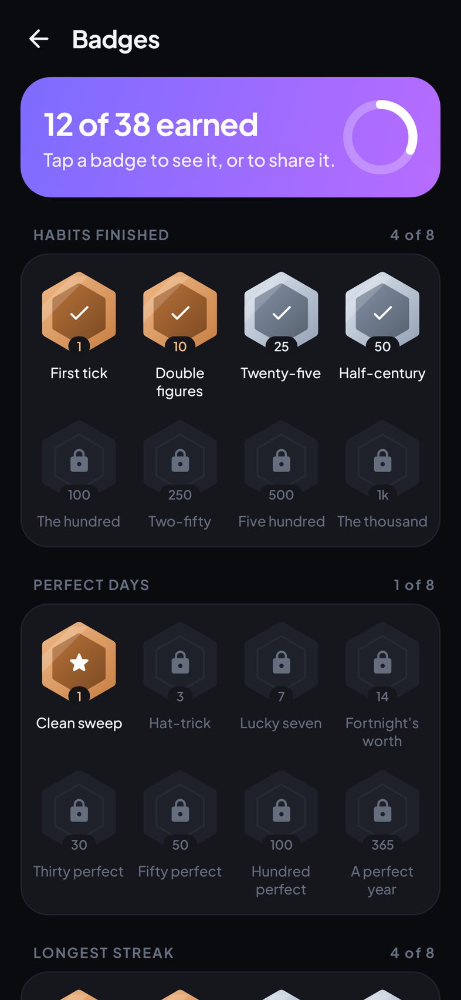
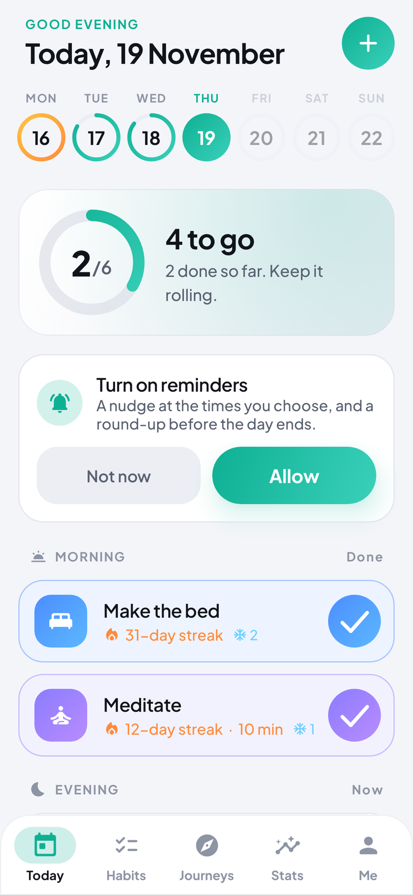

Small habits, kept.
MyHabits is a habit tracker for Android. Tick off what you did, watch the day's ring fill, and keep your streaks going. It celebrates the milestones, reminds you at the times you choose and shows you how you are really doing.
It is free, with no adverts and nothing to unlock. There is no account, and the app cannot go online, so your habits stay on your phone.
Download for AndroidHow to install
- Version 1.0.0
- Android 8 or later
- 2.8 MB
Free, with nothing to unlock. No adverts, no account with the developer, no tracking. Compare or read the release notes.
Chrome may say the file might be harmful. It shows this for app files that do not come from Google Play. Choose Download anyway.

- No subscriptionEvery feature is in the free app.
- No advertsNone in the app and none on this site.
- No internetThe app has no permission to go online.
- Fair streaksRest days, freezes and breaks.
A look inside
These are the real screens, drawn from the app's own code with made-up habits. Swipe or scroll sideways to see them all.







How it works
A habit sticks when it is small, when you can see it adding up, and when a missed day is not the end of it. MyHabits is built around those three things.
Pick a few habits
Choose from 120 ready-made ones or write your own: a tick, a count, a timer or something you are giving up.
Tick them off
Open Today and tap. Swipe right to finish a habit, left for a rest day. A perfect day gets a celebration.
Watch it add up
Streaks grow, badges unlock and your level rises. Stats shows the weeks and months.
Everything is in, and all of it is free
Nothing below is held back for a paid tier, because there is no paid tier.
Habits
- Four kinds of habit
- A tick, a count such as eight glasses of water, a timer, and a quit habit that counts the days since you stopped.
- Any schedule
- Every day, chosen weekdays, a number of times a week, every few days, or set dates. A habit only shows when it is due.
- 120 ready-made habits
- Eleven groups, from mornings and movement to money and home, with search.
- Twelve 30-day journeys
- Walk every day, sleep well, cut down on sugar, stop smoking and more, each building on days 8 and 22.
Streaks
- Streaks that are fair
- A planned rest day keeps a streak. Seven days in a row earns a freeze, and a holiday break pauses everything.
- Celebrations
- A burst on every tick, and confetti for milestones, perfect days, badges and levels. One setting turns them down.
- Levels and 38 badges
- Points for every habit and perfect day, and badges in six groups, bronze to the top tier.
Reminders
- Reminders with buttons
- Up to six a day for each habit, with Done, Snooze and Rest day buttons.
- A round-up, not a nag
- One evening notification lists what is left, and says nothing when nothing is.
- Three widgets
- Today's habits with ticks, today's ring, and one habit with its streak.
Your record
- Statistics
- This week against last, a month of rings, a heat-map, your best weekdays and a twelve-week trend.
- Notes and mood
- A note on any habit on any day, and an optional daily mood check-in.
- Backup you control
- One file to save and restore, a daily copy to a folder you pick, and a spreadsheet export.
Your habits are your business
No internet at all
MyHabits has no permission to go online. It cannot send anything anywhere.
Backups where you choose
A backup is a file you save yourself, to a place you pick.
No ads, no tracking
There is no advertising, analytics or tracking, in the app or on this site.
Installing and updating
MyHabits is not on Google Play, so your phone asks a couple of extra questions the first time.
Download the app file
Tap Download on your phone. The file is called MyHabits.apk and is about 2.8 MB. If Chrome says the file might be harmful, choose Download anyway.
Allow the install
Open the file. The first time, Android asks you to allow your browser to install apps. Allow it, go back and tap Install. If Google Play Protect steps in, choose More details, then Install anyway.
Updating later
MyHabits tells you when a newer version is out. Install the new file over the old one and everything you have saved is kept.
Version 1.0.0, released 19 November 2026. See the release notes, or check your download.
Questions
Is MyHabits really free?
Yes. There is no paid version, no subscription, no trial and no adverts, and nothing in the app is locked. See the comparison.
Is MyHabits on Google Play?
No. MyHabits is a personal project and is downloaded from this site as an Android app file. It needs Android 8 or later, which covers almost every phone in use.
Does it need the internet?
No. The app does not ask Android for internet access at all, so it cannot go online. Everything works on a plane or with no signal.
Where are my habits kept?
On your phone, in the app's private storage. They also go into any backup file you save, into the backup folder if you set one, and into your phone's own Google backup if you have that switched on.
What happens to a streak if I miss a day?
If the day was a rest day or part of a break, nothing. Otherwise a freeze covers it if you have one: you earn a freeze for every seven days in a row and can hold two. With no freeze left, the streak starts again and your best run is kept.
Can I fill in a day I forgot to tick?
Yes. Tap any earlier day in the week strip on Today, or any day in a habit's calendar, and change it. Streaks, statistics and badges are worked out again.
Why did a reminder arrive late, or not at all?
Android holds back alarms from apps it thinks you are not using, and some phones are strict about it. In the app, open Me, then Reminders not arriving. It checks the three settings that matter and sends a test.
Do the widgets update by themselves?
Yes. They redraw whenever a habit changes and just after midnight. A tap on a tick marks the habit without opening the app.
How do I move to a new phone?
In Me, under Backup, choose Save a backup file. Send the file to the new phone, install MyHabits there and choose Restore from a backup. Habits, history, badges and settings all come across.
Are the health statements in the journeys reliable?
They are short summaries of public guidance from the NHS and Cancer Research UK, worded as lowering a risk and never as a promise. MyHabits is not medical advice. The detail is in the terms of use.
Is there an iPhone or web version?
No. MyHabits is an Android app only.
How do I update MyHabits?
Download the newest version from this site and install it over the one you have. Your habits and history are kept. The app cannot check for updates, because it cannot go online. New versions are listed in the release notes.
Small habits, kept, and nobody watching but you
Free, with no adverts and nothing to unlock. Made by the developer of several other free Android apps: see them all.